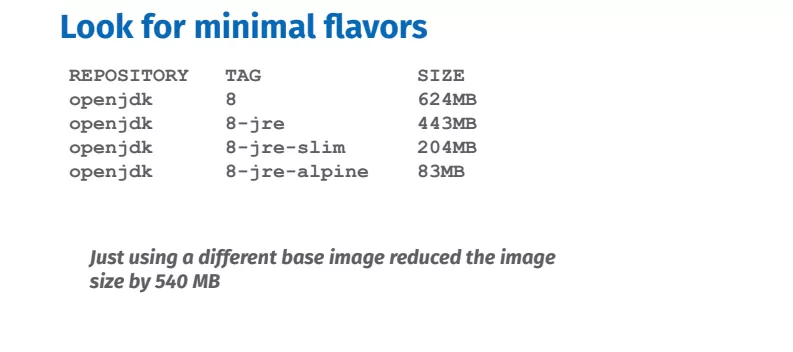

如今，GitHub 上有超过一百万个 Dockerfiles，但并非所有 Dockerfiles 都是按照相同的方式创建的。效率是关重要，这系列文章将覆盖 Dockerfile 最佳实践的五个方面，帮助你编写更好的 Dockerfile ：优化构建时间、镜像大小、可维护性、安全性和复用性。如果你是 Docker 新手，这第一篇文章就是为你准备的！下一篇文章将涵盖更多高级内容。
重要提示：下列 Dockerfiles 要构建一个基于 Maven 的 Java 示例，我们将不断改进它。因此，最后一个 Dockerfile 是推荐的写法，而所有中间的文件只是为了说明特定的最佳实践。
优化构建时间
在开发周期中，构建 Docker 镜像，修改代码，然后重新构建时，利用缓存非常重要。缓存有助于避免运行不必要的构建步骤。
提示1：缓存的顺序很重要
构建步骤（ Dockerfile 指令）的顺序很重要，因为当一个步骤的缓存因更改文件或修改 Dockerfile 中的行失效时，其缓存的后续步骤将中断。按照更改的频率从小到大排序你的步骤，以此优化缓存。
提示2：更明确的 COPY 减少缓存崩溃
只复制所需内容。如果可能的话，避免“COPY”。当把文件复制到镜像中时，确保你对要复制的内容十分明确。对被复制的文件的任何更改都会破坏缓存。在上面的例子中，只有预构建的 jar 应用需要被复制到镜像中，所以只复制它。这样对不相关文件的更改不会影响到缓存。
提示3：关联可缓存单元，例如 apt-get update & install
每个 RUN 指令都可以看作是一个可缓存的单元，过多的 RUN 指令是不必要的，而将所有的命令链接到一个 RUN 指令中很容易破坏缓存，从而影响开发周期。当从包管理器安装包时，你总是希望把更新索引和安装包放在一个 RUN 命令里：它们组成了一个可缓存单元。否则就会有安装过期包的风险。
减小镜像大小
镜像大小很重要，因为较小的镜像意味着更快的部署和较小的攻击面。
提示4：移除不必要的依赖
移除不必要的依赖项，不要安装调试工具。如果确实需要调试工具，可以稍后安装。某些包管理器（如 apt ）会自动安装用户指定包的推荐版本，从而占用不必要空间。Apt 有 -no-install-recommends 标志，可以确保不安装实际不需要的依赖项。如果确实需要，请明确添加。
提示5：移除包管理器缓存
包管理器有自己的缓存，可能会保留到镜像中。处理此问题的一种方法是在安装包的 RUN 指令中将其移除。在另一条 RUN 指令中移除并不会减小镜像大小。
还有其他方法可以减小镜像大小，比如文末介绍的多阶段构建。下一组最佳实践将着眼于如何优化 Dockerfile 的可维护性、安全性和可复用性。
可维护性
提示6：尽可能使用官方镜像
官方镜像可以节省大量维护时间，因为所有安装步骤都已完成且应用了最佳实践。如果你有多个项目，它们可以共享这些层，因为它们使用完全相同的基础镜像。
提示7：使用更具体的标签
不要使用 latest 标签，它的便利之处在于：官方镜像总是能够在 Docker Hub 上使用。但随着时间的推移，可能会出现破坏性的更改。根据不使用缓存重新构建 Dockerfile 的时间间隔，构建可能失败。
相反，应该对基本镜像使用更具体的标签。在本例中，我们使用 openjdk 。还有很多可用的标签，查看 Docker Hub 文档，其中列出了该镜像的所有不同版本。
提示8：寻找最小版本

这些标签中有最小版本意味着其镜像也会更小。slim 版本基于一个简化的 Debian ，而 alpine 版本基于更小的 Alpine Linux 发行版镜像。一个显著的区别是，debian 仍然使用 GUN libc 而 alpine 使用 musl libc ，尽管后者要小得多，但在某些情况下可能导致兼容性问题。对于 openjdk ，jre 版本只包含 java 运行时，而不包含 sdk ；这也大大降低了镜像大小。
再生性
到目前为止，上面的 Dockerfiles 都是假定您的 jar 包是在宿主机上构建的。这并不理想，因为你失去了容器提供的一致性环境的好处。例如，如果你的 Java 应用依赖于特定的库，那么由于构建应用的计算机不同，可能会带来不一致性。
提示9：在一致的环境中构建
源代码是你想构建的 Docker 镜像的真实来源。Dockerfile 只是一个蓝图。
你应该首先确定所构建应用的全部所需内容。我们的 Java 应用需要 Maven 和 JDK ，所以我们基于 Docker Hub 中的一个特定的最小官方 Maven 镜像编写 Dockerfile ，该镜像包括 JDK 。如果需要更多的依赖项，可以在 RUN 步骤安装。
pom.xml 和 src 目录将被复制，它们是最终生成 app.jar 的 RUN 步骤所必需的。（ -e 标志显示错误，-B 标志以被称为 “batch” 的非交互模式运行）。
我们解决了环境不一致的问题，但引入了另一个问题：每次更改代码时，都会获取 pom.xml 中的所有依赖项。请看下一个提示。
提示10：在单独的步骤中获取依赖
还记得“可缓存单元”吗，我们可以把获取依赖项放在单独的可缓存单元中，只需要在 pom.xml 而不是源代码的更改时重新获取。两个 COPY 步骤之间的 RUN 步骤告诉Maven只获取依赖项。
在一致的环境中构建还引入了另外一个问题：我们的镜像比之前更大了，因为它包含运行时不需要的构建时依赖项。
提示11：使用多阶段构建来删除构建依赖（推荐的 Dockerfile）
多阶段构建的标志是使用多个 FROM 语句。每个 FROM 开启一个新的阶段。可以用 AS 关键字命名，我们用它来将第一阶段命名为 “builder”，便于稍后引用。它将在一致的环境中包含所有构建依赖项。
第二阶段是我们的最终阶段，将产生最终镜像。它将严格满足运行时的要求，在本例中是基于Alpine 的最小 JRE（Java运行时）。中间阶段 builder 将被缓存但不会出现在最终镜像中。为了在最终镜像中生成构件，请使用 COPY --from=STAGE_NAME 。在本例中，STAGE_NAME 是 builder。
多阶段构建是消除构建时依赖性的首选解决方案。
我们经历了从不一致地构件臃肿的镜像到在一致环境中构建缓存友好的最小镜像。在下一篇博客文章中，我们将更多地介绍多阶段构建的其他用途。